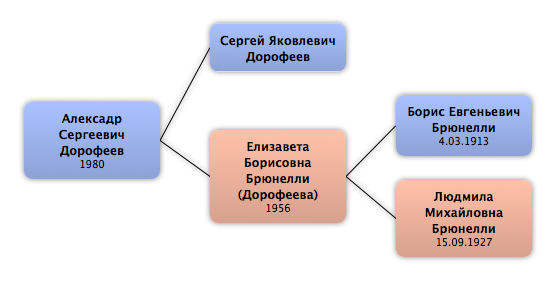

Домой
Домой
 Люди
Люди
 Семьи
Семьи
 Источники
Источники
 Диаграммы
Диаграммы
 Статистика
Статистика
Алексадр Сергеевич Дорофеев

Контекст

Родители
| Отец | Дата рождения | Мать | Дата рождения |
|---|---|---|---|
|
Сергей Яковлевич Дорофеев
|
 Елизавета Борисовна Брюнелли Елизавета Борисовна Брюнелли
|
1956 |
Родители и дети
| Партнёры | Дата рождения | Дети |
|---|
События
| Тип события | Дата | Место | Описание |
|---|---|---|---|
| Рождение | 1980 |
Факты
Медиа
Примечание
Источники
Родство
| Имя | Степень родства | Дата рождения | Место рождения | Дата смерти | Место смерти |
|---|---|---|---|---|---|
| Родителей | |||||
| Отец | |||||
| Мать | 1956 | ||||
| Дедушки и бабушки | |||||
| Дедушка | 4.03.1913 | 13.08.1999 | Ленинград, СССР | ||
| Бабушка | 15.09.1927 | ||||
| Прадедушка и прабабушка | |||||
| Прабабушка | 1885 | 1948 | |||
| Прадедушка | 1893 | 10.06.1938 | Ростовская область, СССР | ||
| Пра-прадедушка и пра-прабабушка | |||||
| Пра-прадедушка | |||||
| Пра-прадедушка | 1868 | ||||
| Пра-пра-прадедушка и пра-пра-прабабушка | |||||
| Пра-пра-прабабушка | |||||
| Пра-пра-прадедушка | 1843 | ||||
| Тёти и дяди | |||||
| Тётя | 1950 | ||||
| Двоюродные дедушки и двоюродные бабушки | |||||
| Двоюродная бабушка | 1910 | ||||
| Двоюродная бабушка | 1914 | ||||
| Двоюродная бабушка | 1918 | 2000 | |||
| Двоюродная бабушка | 01.02.1926 | Ленинград, СССР | 06.10.1997 | Санкт-Петербург, Россия | |
| Двоюродные прадедушки и двоюродные прабабушки | |||||
| Двоюродный прадедушка | |||||
| Двоюродные пра-прадедушки и двоюродные пра-прабабушки | |||||
| Двоюродный пра-прадедушка | 23.06.1873 | Манглиси, Грузия | 7.10.1949 | Париж, Франция | |
| Двоюродная пра-прабабушка | 17.04.1879 | Новороссийск, Россия | 20.09.1962 | Париж, Франция | |
| Двоюродная пра-прабабушка | 1887 | 22.02.1927 | Париж, Франция | ||
| Дальные дяди и тёти жены(мужа) | |||||
| Двоюродный дедушка (по браку) | 22.08.1926 | Хабаровск, СССР | 08.05.2006 | Санкт-Петербург, Россия | |
| Двоюродные братья и сёстры | |||||
| Двоюродный брат | 1974 | ||||
| Дальние родственники | |||||
| Троюродный брат | |||||
| Троюродная сестра | |||||
| Троюродный брат | 01.09.1988 | Ленинград, СССР | |||
| Троюродный брат | 19.11.1991 | Санкт-Петербург, Россия | |||
| Троюродный брат | 15.07.1995 | Санкт-Петербург, Россия | |||
| Другие родственники | |||||
| Двоюродный дядя | |||||
| Троюродная тётя | |||||
| Троюродный дядя | |||||
| Троюродная бабушка | |||||
| Троюродная бабушка | |||||
| Троюродная прабабушка | 9.08.1902 | Санкт-Петербург, Россия | 17.09.1923 | Ницца, Франция | |
| Двоюродный дядя | 1937 | ||||
| Двоюродная тётя | 1939 | ||||
| Двоюродная тётя | 19.03.1963 | Ленинград, СССР | |||
| Двоюродный дядя | 22.02.1965 | Ленинград, СССР | |||